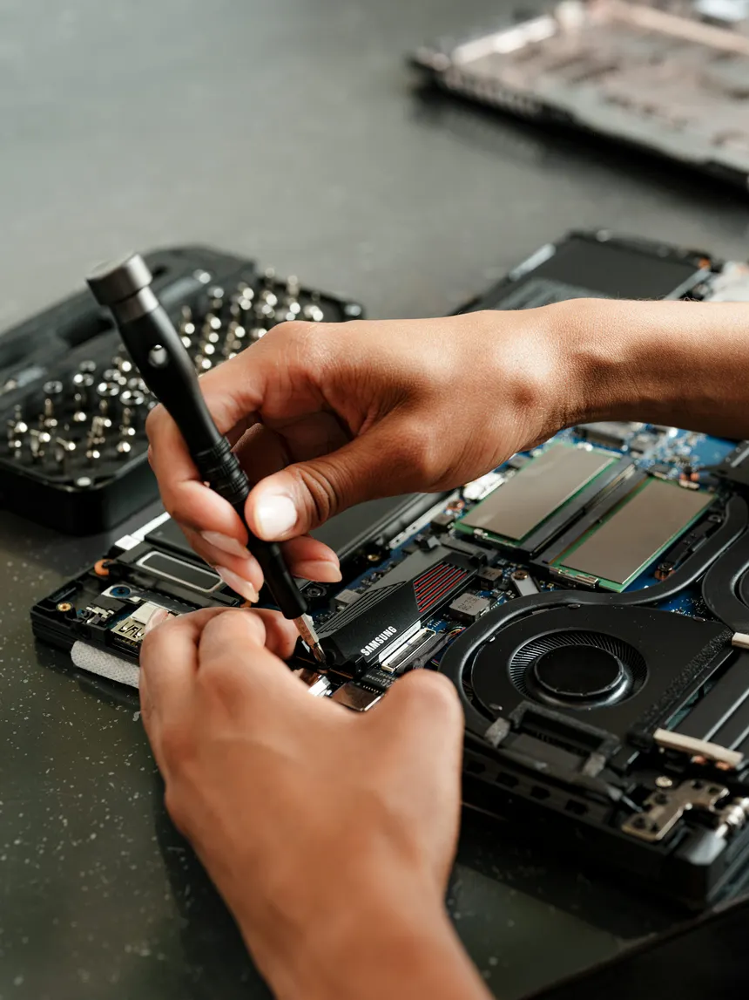
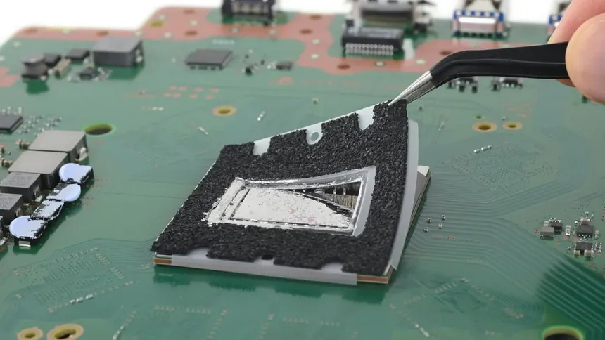

Somos una empresa independiente con una pagina web y servicio personalizado, agenando citas con previa vista al dispositivo que posee, dando un analisis y diagnostico el cual nos permite visualizar los problemas existentes y que no de problemas a futuro. Con nosotros tus dispositivos estan seguros, con un excelente trabajo de calidad y monitoreo, damos recomendaciones, ayuda para que puedan mantener sus equipos en buen estado.
Un Mantenimiento preventivo a nuestras computadoras es algo que nos ayuda a que los componentes no se desgasten y se acorten su tiempo de vida, tambien nos ayuda a tener nuestro equipo en condiciones optimas antes de un Mantenimiento correctivo, un correctivo suele aplicarse cuando la computdora necesita cambiar componentes, depnde cual componente sea, suele ser algo complejo, sin embargo con nosotros tendra un trabajo correcto, cuidando la integridad de su dispositivo.
Sucede algo curioso cuando no se les da un mantenimiento o limpieza , como comúnmente se le conoce "ventiladores de avion" cuando eso sucede es porque los ventiladores estan llenos de polvo, pelusa o hasta un insecto, por lo cual se debe abrir y verificar en que estado esta, dependiendo de la consola y su generacion necesitan pasta termina o metal liquido, nosotros contamos con ambas cosas y tambien si tiene insectos, tratamos de que no se propaguen, tenemos a la consola en "cuarentena" lo cual nos da tiempo hasta quitar lo que contiene. Nosotros nos encargamos de todo, con consolas retro y actuales.
| Servicios | Dispositivo | Area | Precios |
|---|---|---|---|
| Mantenimiento Preventivo | Gama Media | Hardware | $15.00 |
| Mantenimiento Correctivo | Gama Alta | Hardware y Software | $40.00 |
| Mantenimiento Preventivo Consola PS4 | Consola | Hardware | $15.00 |
| Cambio de Software | Pc Gama Baja | Software | $10.00 |
| Componentes | Targeta Grafica RTX5050 | Hardware | $300.00 |


